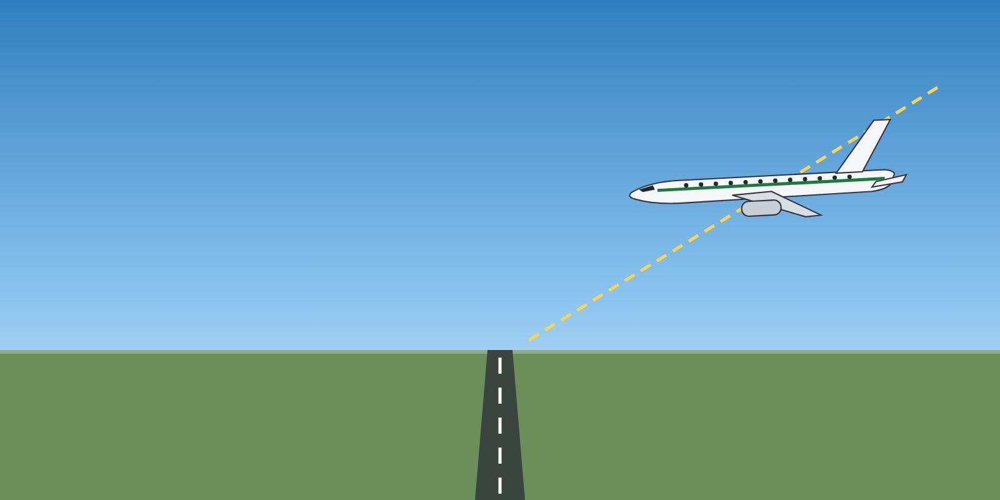

Lesson 16: Flight Path Management and Manual Handling
Learning objectives
- Describe flight path management as the core of upset prevention.
- Apply the pitch-and-power method to manual flying.
- Maintain manual handling skills and know when to use them.

Flight path management
Flight path management is the planning, execution and monitoring of the aircraft's trajectory and energy — whether flown manually or with automation. It is the most important upset prevention tool. It includes:
- planning — briefing the expected path, speeds, configuration changes and threats;
- executing — choosing the right level of automation and flying accurately;
- monitoring — checking that the aircraft is doing what was planned, and recognising deviations early.
Pitch and power
Manual flying is built on known pitch attitudes and thrust settings for each phase of flight. If you know that a given pitch and thrust produce level flight at a given speed and configuration, you can fly the aircraft safely even with unreliable instruments — and you will recognise immediately when something is wrong.
- Set the attitude first, then the thrust, then trim. Wait for the aircraft to settle before making further changes.
- Use small, smooth inputs. Make a correction, hold it, and observe the result.
- Learn the typical values for your type from the FCTM and the unreliable airspeed tables.
The instrument scan
The attitude indicator is the centre of the scan. Move from attitude to speed, attitude to altitude, attitude to heading, and back. A good scan detects a developing upset within seconds.
Keeping manual skills current
- Hand-fly when conditions, workload and company policy allow — for example a departure or an approach in good weather.
- Practise manual flying with the flight director off in the simulator.
- Use automation as a tool — not as a substitute for understanding where the aircraft is and where it is going.
Fly the aircraft first. Then navigate, then communicate. Whatever happens, someone must always be flying and monitoring the flight path.
Key takeaways
- Flight path management — plan, execute, monitor — is the core of prevention.
- Pitch + power = performance: know the values for your type.
- Attitude indicator at the centre of the scan; small, smooth inputs.
- Keep manual skills current within company policy.
Knowledge check
What is the basis of the pitch-and-power method?